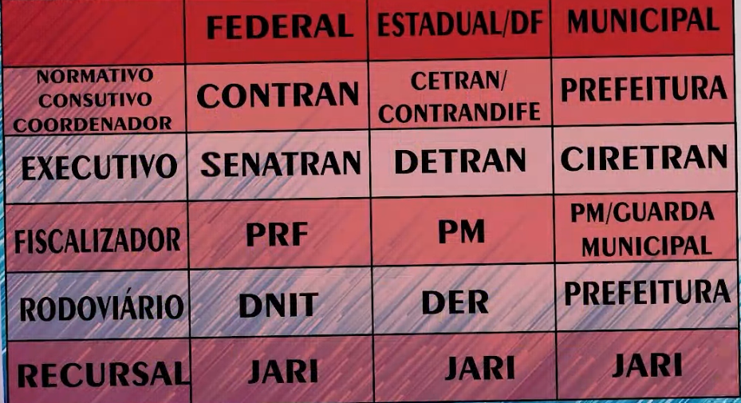

SNT
Duas esferas Federal / Estadual
Federal
Associar a Brasil
Estadual
Associar ao estado
COMPOSIÇÃO DO SISTEMA NACIONAL DE TRÂNSITO
Orgãos normativos, consultivos e coordenadores, que ditam normas e fazem as leis (CCC)
CONTRAN - Federal
CETRAN - Estadual
CONTRANDIFE - DF
Orgãos Executivos, cumprem e fazem cumprir leis de trânsito
De execução, organização, coordenação, supervisão de órgãos:
SENATRAN (RENACH e o RENAVAM) - Federal
De cumprir, fazer que seja cumprida a lei nos limites da sua jurisdição, fiscalizar, punir, educar, licenciar e emplacar:
DETRAN - Estadual
CIRETRAN - Municipal
De Fiscalização, patrulhamento :
Policia Rodoviaria Federal
Policia Militares dos estados e DF
De operação, planejamento e cuidado da malha viária (Orgãos rodoviários):
DNIT Departameto nacional de Infraestrutura de Transportes - Rodovias Federais
D.E.R Departamento de Estradas e Rodagem - Rodovias Estaduais
De recursos contra infrações aplicadas:
JARIs - Juntas Administrativas de Recursos de Infrações
